<div id="tools-side" style="display:block">
    <div id="tools-minimized">
        <div>
            
        </div>
    </div>

    <div id="tools-maximized" style="display:flex;flex-direction:column;height:100%">
        <!-- tools hide/show, display left/right -->
        <div id="headerBlock" style="flex:0 1 28px;background:#333">

            <div style="display:flex">
                <div style="flex:0 0 28px"><button type="button" id="display-minimize" title="Minimize toolbar" class="nwl-tool-button push noBorder"></button></div>
                <div style="flex:1 1 auto"></div>
                <div style="flex:0 0 28px"><button type="button" id="display-left" title="Display to the left" class="nwl-tool-button push noBorder"></button></div>
                <div style="flex:0 0 28px"><button type="button" id="display-right" title="Display to the right" class="nwl-tool-button push noBorder"></button></div>
            </div>

        </div>

        <!-- slider -->
        <div id="sliderBlock" style="flex:0 0 28px">
            <div style="display:flex">
                <div style="flex:0 0 28px">
                    <button type="button" id="prev" class="nwl-tool-button push">-</button>
                </div>
                <div style="flex:1 0 28px;display:flex">
                    <div style="flex:1;position:relative">
                        <div id="slice" class="slider" data-max="100" data-val="0" style="position:absolute;height:100%;margin-left:10px;width:calc(100% - 20px)">
                            <div class="track" style="position:absolute;left:0;top:50%;width:100%;border-top:1px solid #fff;padding:0;display:inline-block"></div>
                            <div class="thumb" style="position:absolute;left:0;top:50%;transform:translate(-10px,-10px);border-radius:10px;padding:0;width:20px;height:20px;background:#fff;display:inline-block"></div>
                        </div>
                    </div>
                </div>
                <div style="flex:0 0 28px">
                    <button type="button" id="next" class="nwl-tool-button push">+</button>
                </div>
            </div>
        </div>

        <!-- buttons -->
        <div id="buttonsBlock" style="flex:0 0 auto">
            <div style="display:flex;flex-wrap:wrap">

                <!-- Sag/Cor/Axi/3D are one mutually-exclusive set: they all answer
                     "what am I looking at". Keeping 3D in the same group is also what
                     makes leaving it obvious - you pick a plane, exactly as you would
                     to switch between planes. -->
                <div style="flex:1 0 200px;width:50px">
                    <div id="plane" style="display:flex" class="chose">
                        <div style="flex:1"><button type="button" title="sag" class="nwl-tool-button pressed">Sag</button></div>
                        <div style="flex:1"><button type="button" title="cor" class="nwl-tool-button">Cor</button></div>
                        <div style="flex:1"><button type="button" title="axi" class="nwl-tool-button">Axi</button></div>
                        <div style="flex:1"><button type="button" title="3d" class="nwl-tool-button">3D</button></div>
                    </div>
                </div>

                <div style="flex:1 0 100px;width:50px">
                    <div style="display:flex">
                        <div style="flex:1"><button type="button" id="fullscreen" title="Full screen" class="nwl-tool-button toggle"></button></div>
                        <!-- Attribution / "watch on BrainBox" link, like the logo on an
                             embedded video. A real anchor, so the browser treats opening
                             it as navigation from a user gesture rather than a popup.
                             Hidden when the embedding page passes brainboxLink=0. -->
                        <div style="flex:2"><a id="brainboxLink" class="nwl-tool-button push" target="_blank" rel="noopener noreferrer" title="Open this brain in BrainBox"></a></div>
                    </div>
                </div>

            </div>
        </div>
    </div>

</div>

<!-- Loading indicator -->
<div id="loadingIndicator">
    <p>Loading...</p>
    <div class="disc"></div>
</div>
<!-- End Loading indicator -->
